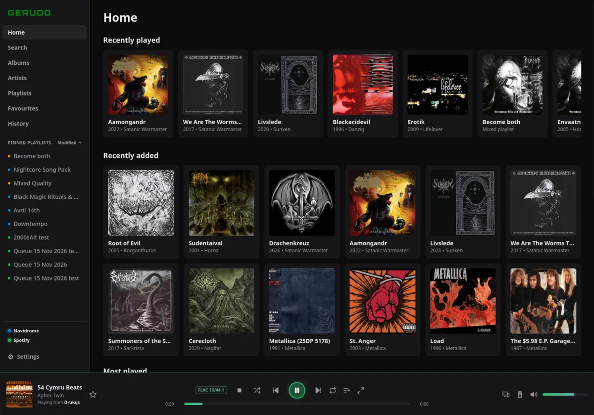
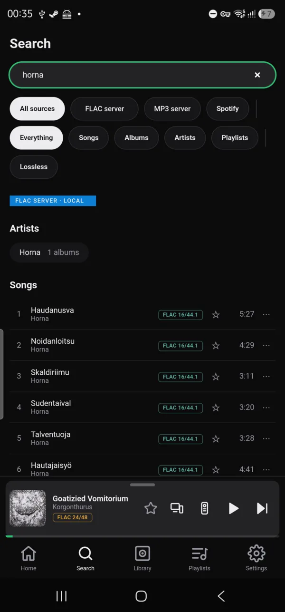
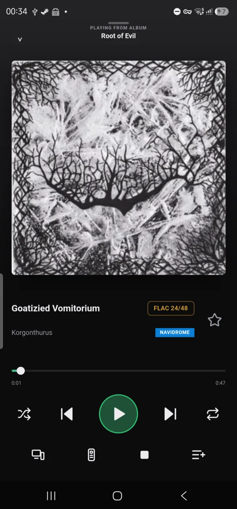
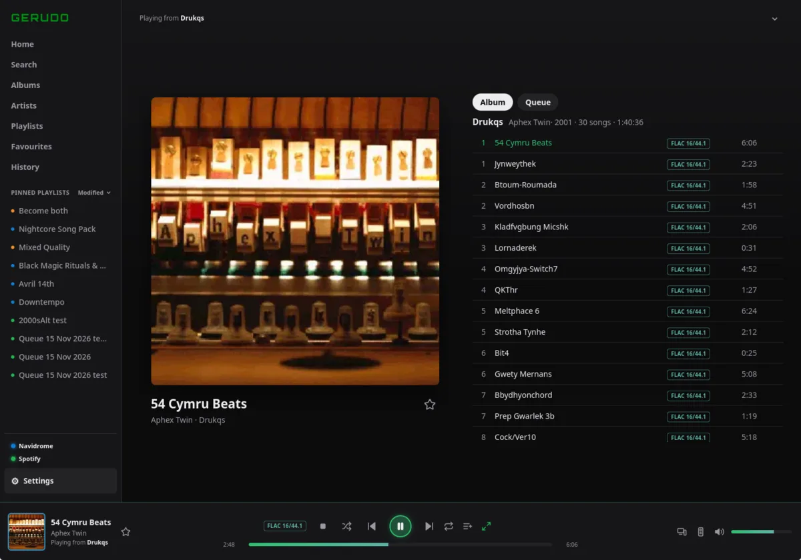
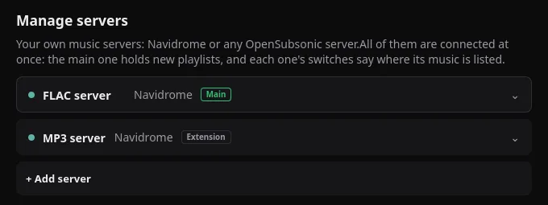

En musikspelare för din egen samling
Din musik.
Spelad precis
som den spelades in.
Gerudo spelar ditt eget FLAC-bibliotek och Spotify på ett ställe, på datorn och i mobilen, och skickar varje fil till dina högtalare helt orörd.


Varför den finns
Din musiksamling förblir privat.
Ditt lyssnande förblir personligt.
En omsorgsfullt rippad samling förtjänar bättre än att pressas genom vad en spelare än bestämmer. Gerudo samlar din egen server, ditt Spotify-konto och dina enheter i en app, och håller sig undan från ljudet. Ingen webbläsare i uppspelningen, inget eget molnkonto, inget som säljs eller spåras.

Sök i allt på en gång
Dina servrar och Spotify svarar sida vid sida, var och en i sin egen grupp, så du alltid vet var en låt kommer ifrån.

Se vad du hör
Kodek, samplingsfrekvens, bitdjup och bithastighet för varje låt, och vad som faktiskt når utgången, uppmätt och inte gissat.

Fortsätt där du slutade
Flytta musiken från datorn till mobilen och tillbaka med ett tryck: samma kö, samma låt, samma sekund.
På datorn
En vardagsrumsspelare på skrivbordet.
Klicka på omslaget så fyller Gerudo fönstret: omslaget stort, albumet bredvid med låten som spelas markerad, och kön en flik bort.
- Spelar frånVisar alltid albumet eller spellistan musiken kom från, med en länk tillbaka. Det följer till och med med när musiken flyttas till mobilen.
- Ditt skrivbord, ingen webbläsareMedieknappar, KDE-widgeten och ikonen i systemfältet styr den, och den fortsätter spela när fönstret är stängt.
- Volym som fungerar lågtVarje steg på reglaget gör skillnad, med fin kontroll i den tysta änden där nattlyssnandet sker.
- Blandade spellistorDina egna låtar och Spotify-låtar i samma spellista, sparad på din egen hubb och likadan på alla enheter.

Mer än ett bibliotek
FLAC-versionen och MP3:an du aldrig bytte ut. Tillsammans.
Anslut flera musikservrar samtidigt: en huvudserver och tillägg. Ett album som finns på båda visas bara en gång, med en flik per version och bästa kvaliteten först.
- Ta med eller utelämnaVarje server har egna reglage för Sök, Album och Artister. Göm MP3:orna när du bläddrar utan att tappa dem ur dina spellistor.
- Versioner sida vid sida24/96 och 16/44.1, eller FLAC och MP3: välj fliken, och "Spelar från" följer kopian du valde.
- Spellistor som växerLägg en låt från en annan server eller Spotify i en spellista, så erbjuder Gerudo att göra den blandad och behåller varje låt.



Minns ärligt
En historik över vad du faktiskt lyssnade på.
En låt räknas först när du hört halva den. Att hoppa framåt räknas inte. De senaste 500 lyssningarna, från alla enheter, grupperade per dag, och varje låt säger var den spelades.
- Senast spelatAlbum och spellistorna du spelade från, delade mellan mobil och dator.
- Favoriter och antal spelningarStjärnor och scrobblingar går direkt tillbaka till din egen server.
- Ignorera en låtHoppa över just den låten du aldrig vill höra när ett album eller en spellista spelas, på alla enheter.
De två saker den gör bäst
Titta närmare.
Bitperfekt, och den kan bevisa det.
Varje låt når din DAC i sin egen samplingsfrekvens, och Gerudo visar ärligt när något står i vägen.
Se signalkedjan → ÖveralltEtt bibliotek. Två skärmar. Inget moln.
Mobil och dator håller takten via en liten hubb hemma, och en ny dator ansluts genom att skanna en kod.
Se hur de pratar →